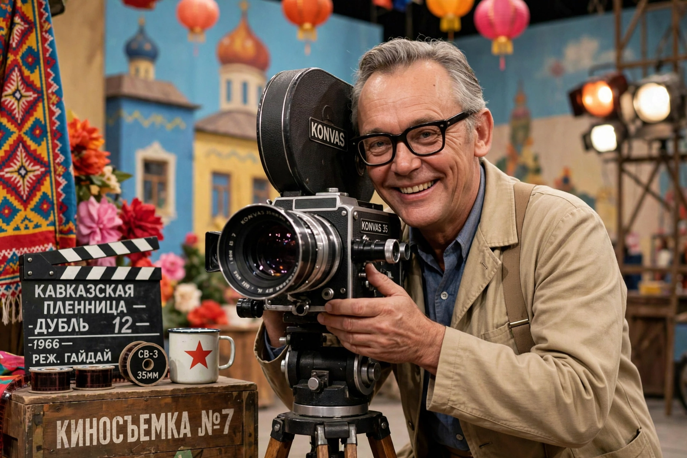

Leonid Gaidai
| Leonid Gaidai | |
|---|---|
 | |
| Born | Leonid Iovich Gaidai 30 January 1923 Svobodny, Amur Governorate, Soviet Union |
| Died | 19 November 1993 (aged 70) Moscow, Russia |
| Occupation | Film director, screenwriter, actor |
| Years active | 1955–1992 |
| Notable work | Operation Y (1965), Kidnapping, Caucasian Style (1967), The Diamond Arm (1969), Ivan Vasilievich (1973) |
Leonid Iovich Gaidai (Russian: Леонид Иович Гайдай; 30 January 1923 – 19 November 1993) was a Soviet and Russian film director, screenwriter and actor, and the most commercially successful comedy director in Soviet cinema. His films — fast-paced slapstick built around a beloved trio of comic villains, the Coward, the Fool and the Experienced (played by Georgy Vitsin, Yuri Nikulin and Yevgeny Morgunov) — remain quoted and rewatched across the Russian-speaking world.
Career
Gaidai served in the Red Army during the Second World War and was seriously wounded. He studied at VGIK under Grigori Aleksandrov and joined Mosfilm, working under the state system (see Goskino). After early dramatic work, his breakthrough came with the short comedies Dog Barbos and Unusual Cross and Moonshiners (both 1961), which introduced the Coward–Fool–Experienced trio.
Major comedies
Operation Y and Shurik's Other Adventures (1965) introduced the student Shurik (Aleksandr Demyanenko) and topped the Soviet box office. Kidnapping, Caucasian Style (1967) and The Diamond Arm (1969), starring Nikulin and Andrei Mironov, were among the most-attended films in Soviet history. In the 1970s Gaidai turned to literary adaptation: The Twelve Chairs (1971, after Ilf and Petrov), Ivan Vasilievich Changes Profession (1973, after Bulgakov) — in which a time machine swaps a Moscow building superintendent with Ivan the Terrible — and It Can't Be! (1975, after Zoshchenko).
Legacy
Gaidai's later films never matched his 1960s popularity, but his classics are perennial television fixtures in Russia, and their catchphrases have entered everyday speech. He was named People's Artist of the USSR in 1989 and died in Moscow in 1993.